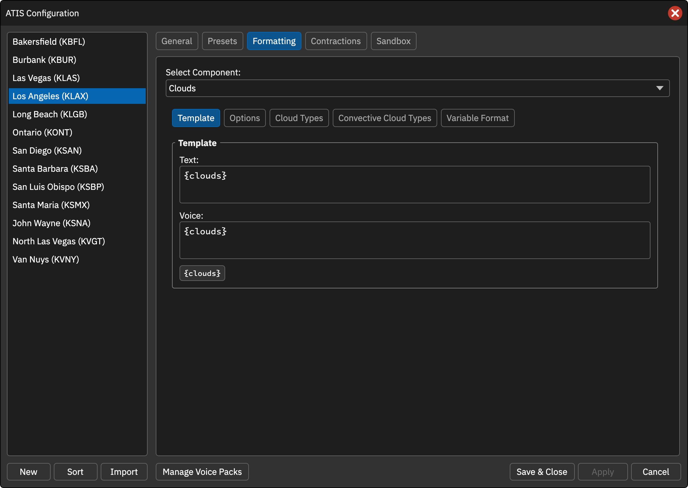
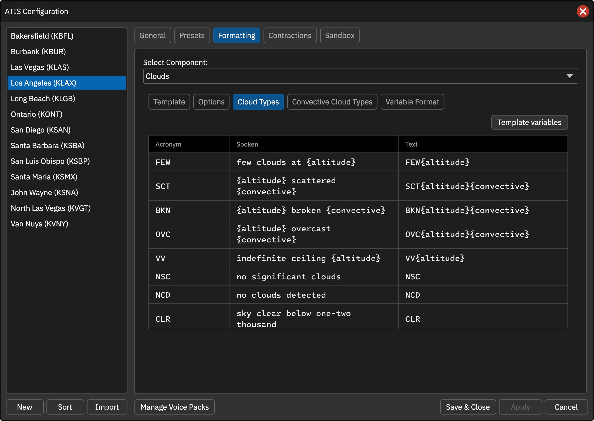
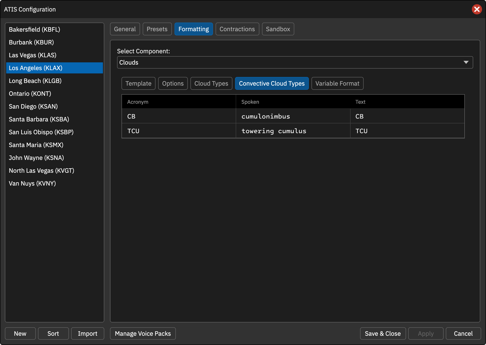
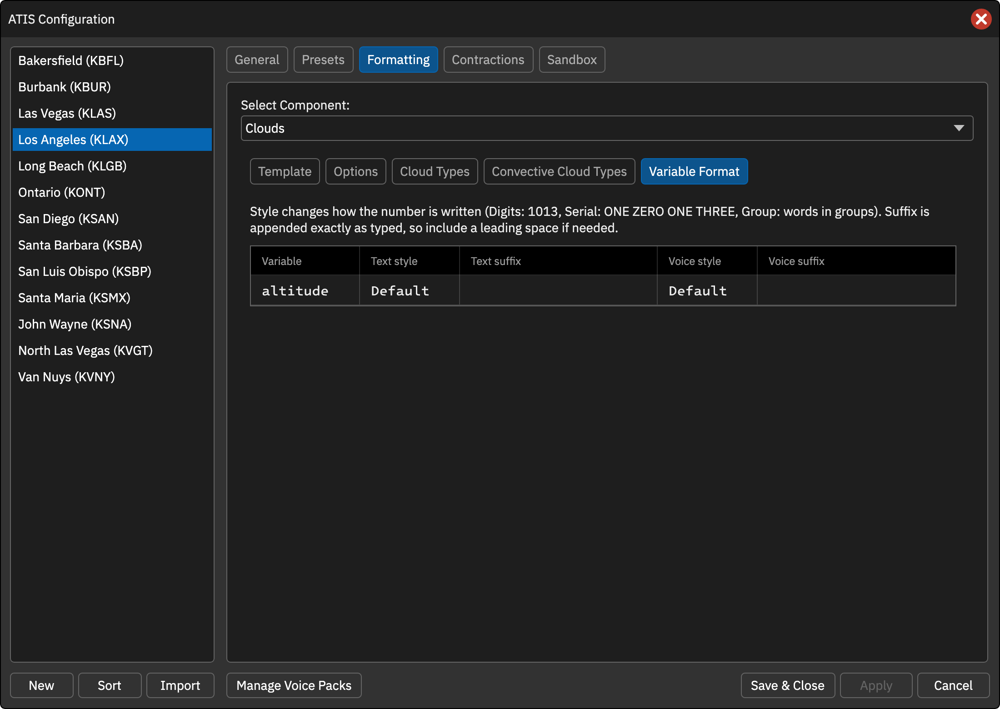

云况
预设使用 [CLOUDS]，内部 {clouds} 表示云组，例如 FEW050 SCT100。
云底高（Ceiling）
在选定云量类型中，最低且有已报告高度的云层作为 ceiling。可选 SCT、BKN、OVC，默认 BKN 和 OVC。
- 语音默认在该云层前加 CEILING，可关闭。
- 文字可选择添加前缀，默认不启用，启用后的默认前缀为 CIG，例如
CIG BKN014。
高度与未知云层
- Convert cloud layer altitude to metric：文字、语音高度均转换为米。
- 文字云高选项可将编码式百英尺值展开，例如 FEW010 显示 FEW1000；以沙盒实际输出核对结果。
- Undetermined height (///)：分别设置云层和垂直能见度高度未知时的文字、语音，用于替换
{altitude}。 - UND 行：用于
FEW///、BKN///CB等高度未报云层，{amount}插入 FEW / BKN 云量。
Cloud Types
| 变量 | 用途 |
|---|---|
{altitude} |
云层高度；文字默认补齐 3 位 |
{altitude:N} |
文字最少 N 位，例如 300 英尺对应 {altitude:2} 为 03 |
{convective} |
CB / TCU 等对流云描述 |
{amount} |
仅 UND 行中的云量 |
{feet} |
已知且未转米时输出 feet；高度未知或转米时为空 |
对流云
Convective Cloud Types 分别设置 CB、TCU 的语音和文字，文字默认保留报码。
非 FAA 席位的 Automatic CB Detection 处理 //////CB：雷达探测到积雨云但没有云量高度。默认文字 //////CB，语音 RADAR DETECTED C-B CLOUDS。
Variable Format
为高度分别设置文字和语音的 Default / Digits / Serial / Group 及后缀。转米后，语音的 meters 仍添加在数值后。
操作截图参考
以下为上游原版截图，保留英文标签。用于定位操作；品牌、登录字段与网络行为以本页 CAN 说明为准。



